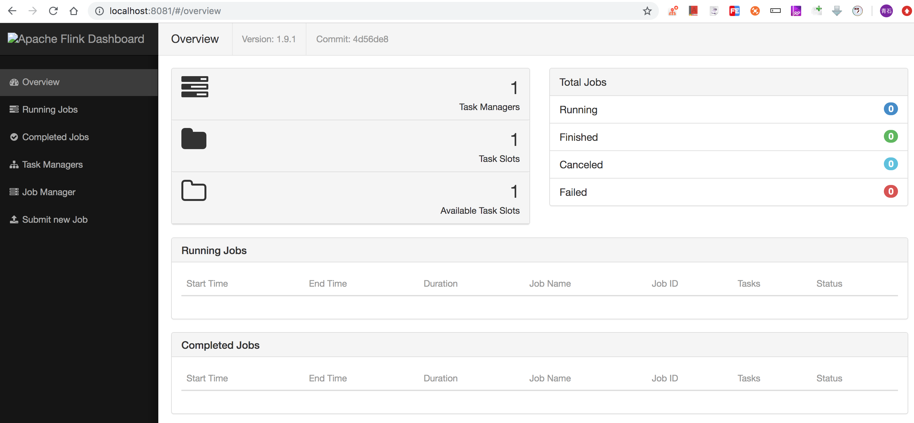
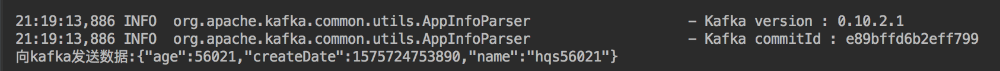
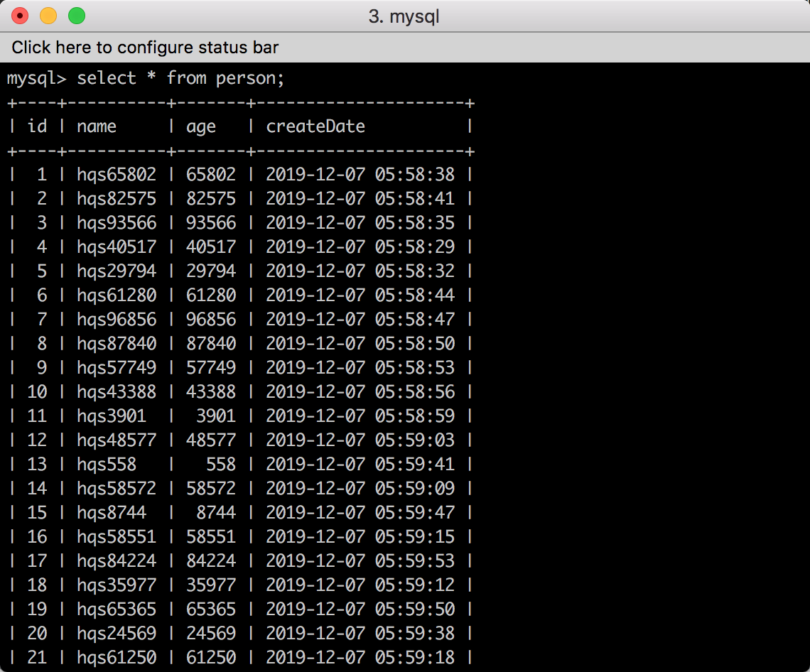

最近flink已经变得比较流行了，所以大家要了解flink并且使用flink。现在最流行的实时计算应该就是flink了，它具有了流计算和批处理功能。它可以处理有界数据和无界数据，也就是可以处理永远生产的数据。具体的细节我们不讨论，我们直接搭建一个flink功能。总体的思路是source -> transform -> sink，即从source获取相应的数据来源，然后进行数据转换，将数据从比较乱的格式，转换成我们需要的格式，转换处理后，然后进行sink功能，也就是将数据写入到相应的db里边或文件中用于存储和展现。
接下来我们需要下载flink，kafka，mysql, zookeeper， 我直接下载了tar或tgz包，然后解压。
下载好flink之后，然后启动一下，比如我下载了flink-1.9.1-bin-scala_2.11.tgz，然后解压一下。
tar -zxvf flink-1.9.1-bin-scala_2.11.tgz
cd flink-1.9.1
./bin/start-cluster.sh启动好了之后访问 http://localhost:8081 ，会看到截图。

下载zookeeper，解压之后，复制zookeeper/conf下的zoo_sample.cfg, 然后启动，命令如下，zookeeper是和kafka结合使用的，因为kafka要监听和发现所有broker的。
cp zoo_sample.cfg zoo.cfg
cd ../
./bin/zkServer.sh start接下来下载kafka和启动, 创建一个person的topic，由一个partition和一个备份构成。
./bin/kafka-server-start.sh config/server.properties
./bin/kafka-topics --create --zookeeper localhost:2181 --replication-factor 1 --partitions 1 --topic personmysql的话，大家可以自行安装了，安装好之后可以在数据库里创建一张表。
CREATE TABLE `Person` (
`id` mediumint NOT NULL auto_increment,
`name` varchar(255) NOT NULL,
`age` int(11) DEFAULT NULL,
`createDate` timestamp NULL DEFAULT NULL,
PRIMARY KEY (`id`)
) ENGINE=InnoDB DEFAULT CHARSET=utf8mb4 COLLATE=utf8mb4_general_ci接下来我们该创建一个JAVA工程，采用的maven的方式。前提是大家一定要先安装好maven，可以执行mvn命令。直接执行一下maven的时候可能会卡住，下载不了，我先从
mvn archetype:generate \
-DarchetypeGroupId=org.apache.flink \
-DarchetypeArtifactId=flink-quickstart-java \
-DarchetypeVersion=1.7.2 \
-DgroupId=flink-project \
-DartifactId=flink-project \
-Dversion=0.1 \
-Dpackage=myflink \
-DinteractiveMode=false \ #这个是创建项目时采用交互方式，上边指定了了相关的版本号和包名等信息，所以不需要交互方式进行。
-DarchetypeCatalog=local #这个是使用上边下载的文件，local也就是从本地文件获取，因为远程获取特别慢。导致工程生成不了。我的这个项目添加了一些依赖比如kafka的，数据库连接等，具体的pom文件内容为：
<!--
Licensed to the Apache Software Foundation (ASF) under one
or more contributor license agreements. See the NOTICE file
distributed with this work for additional information
regarding copyright ownership. The ASF licenses this file
to you under the Apache License, Version 2.0 (the
"License"); you may not use this file except in compliance
with the License. You may obtain a copy of the License at
http://www.apache.org/licenses/LICENSE-2.0
Unless required by applicable law or agreed to in writing,
software distributed under the License is distributed on an
"AS IS" BASIS, WITHOUT WARRANTIES OR CONDITIONS OF ANY
KIND, either express or implied. See the License for the
specific language governing permissions and limitations
under the License.
-->
<project xmlns="http://maven.apache.org/POM/4.0.0" xmlns:xsi="http://www.w3.org/2001/XMLSchema-instance"
xsi:schemaLocation="http://maven.apache.org/POM/4.0.0 http://maven.apache.org/xsd/maven-4.0.0.xsd">
<modelVersion>4.0.0</modelVersion>
<groupId>flink-project</groupId>
<artifactId>flink-project</artifactId>
<version>0.1</version>
<packaging>jar</packaging>
<name>Flink Quickstart Job</name>
<url>http://www.myorganization.org</url>
<properties>
<project.build.sourceEncoding>UTF-8</project.build.sourceEncoding>
<flink.version>1.7.2</flink.version>
<java.version>1.8</java.version>
<scala.binary.version>2.11</scala.binary.version>
<maven.compiler.source>${java.version}</maven.compiler.source>
<maven.compiler.target>${java.version}</maven.compiler.target>
</properties>
<repositories>
<repository>
<id>apache.snapshots</id>
<name>Apache Development Snapshot Repository</name>
<url>https://repository.apache.org/content/repositories/snapshots/</url>
<releases>
<enabled>false</enabled>
</releases>
<snapshots>
<enabled>true</enabled>
</snapshots>
</repository>
</repositories>
<dependencies>
<!-- Apache Flink dependencies -->
<!-- These dependencies are provided, because they should not be packaged into the JAR file. -->
<dependency>
<groupId>org.apache.flink</groupId>
<artifactId>flink-java</artifactId>
<version>${flink.version}</version>
<scope>provided</scope>
</dependency>
<dependency>
<groupId>org.apache.flink</groupId>
<artifactId>flink-streaming-java_${scala.binary.version}</artifactId>
<version>${flink.version}</version>
<scope>provided</scope>
</dependency>
<!-- Add connector dependencies here. They must be in the default scope (compile). -->
<!-- Example:
<dependency>
<groupId>org.apache.flink</groupId>
<artifactId>flink-connector-kafka-0.10_${scala.binary.version}</artifactId>
<version>${flink.version}</version>
</dependency>
-->
<dependency>
<groupId>org.apache.flink</groupId>
<artifactId>flink-connector-kafka-0.10_${scala.binary.version}</artifactId>
<version>${flink.version}</version>
</dependency>
<!-- Add logging framework, to produce console output when running in the IDE. -->
<!-- These dependencies are excluded from the application JAR by default. -->
<dependency>
<groupId>org.slf4j</groupId>
<artifactId>slf4j-log4j12</artifactId>
<version>1.7.7</version>
<scope>runtime</scope>
</dependency>
<dependency>
<groupId>log4j</groupId>
<artifactId>log4j</artifactId>
<version>1.2.17</version>
<scope>runtime</scope>
</dependency>
<dependency>
<groupId>com.alibaba</groupId>
<artifactId>fastjson</artifactId>
<version>1.2.62</version>
</dependency>
<dependency>
<groupId>com.google.guava</groupId>
<artifactId>guava</artifactId>
<version>28.1-jre</version>
</dependency>
<dependency>
<groupId>redis.clients</groupId>
<artifactId>jedis</artifactId>
<version>3.1.0</version>
</dependency>
<dependency>
<groupId>mysql</groupId>
<artifactId>mysql-connector-java</artifactId>
<version>8.0.16</version>
</dependency>
<dependency>
<groupId>com.alibaba</groupId>
<artifactId>druid</artifactId>
<version>1.1.20</version>
</dependency>
</dependencies>
<build>
<plugins>
<!-- Java Compiler -->
<plugin>
<groupId>org.apache.maven.plugins</groupId>
<artifactId>maven-compiler-plugin</artifactId>
<version>3.1</version>
<configuration>
<source>${java.version}</source>
<target>${java.version}</target>
</configuration>
</plugin>
<!-- We use the maven-shade plugin to create a fat jar that contains all necessary dependencies. -->
<!-- Change the value of <mainClass>...</mainClass> if your program entry point changes. -->
<plugin>
<groupId>org.apache.maven.plugins</groupId>
<artifactId>maven-shade-plugin</artifactId>
<version>3.0.0</version>
<executions>
<!-- Run shade goal on package phase -->
<execution>
<phase>package</phase>
<goals>
<goal>shade</goal>
</goals>
<configuration>
<artifactSet>
<excludes>
<exclude>org.apache.flink:force-shading</exclude>
<exclude>com.google.code.findbugs:jsr305</exclude>
<exclude>org.slf4j:*</exclude>
<exclude>log4j:*</exclude>
</excludes>
</artifactSet>
<filters>
<filter>
<!-- Do not copy the signatures in the META-INF folder.
Otherwise, this might cause SecurityExceptions when using the JAR. -->
<artifact>*:*</artifact>
<excludes>
<exclude>META-INF/*.SF</exclude>
<exclude>META-INF/*.DSA</exclude>
<exclude>META-INF/*.RSA</exclude>
</excludes>
</filter>
</filters>
<transformers>
<transformer implementation="org.apache.maven.plugins.shade.resource.ManifestResourceTransformer">
<mainClass>myflink.StreamingJob</mainClass>
</transformer>
</transformers>
</configuration>
</execution>
</executions>
</plugin>
</plugins>
<pluginManagement>
<plugins>
<!-- This improves the out-of-the-box experience in Eclipse by resolving some warnings. -->
<plugin>
<groupId>org.eclipse.m2e</groupId>
<artifactId>lifecycle-mapping</artifactId>
<version>1.0.0</version>
<configuration>
<lifecycleMappingMetadata>
<pluginExecutions>
<pluginExecution>
<pluginExecutionFilter>
<groupId>org.apache.maven.plugins</groupId>
<artifactId>maven-shade-plugin</artifactId>
<versionRange>[3.0.0,)</versionRange>
<goals>
<goal>shade</goal>
</goals>
</pluginExecutionFilter>
<action>
<ignore/>
</action>
</pluginExecution>
<pluginExecution>
<pluginExecutionFilter>
<groupId>org.apache.maven.plugins</groupId>
<artifactId>maven-compiler-plugin</artifactId>
<versionRange>[3.1,)</versionRange>
<goals>
<goal>testCompile</goal>
<goal>compile</goal>
</goals>
</pluginExecutionFilter>
<action>
<ignore/>
</action>
</pluginExecution>
</pluginExecutions>
</lifecycleMappingMetadata>
</configuration>
</plugin>
</plugins>
</pluginManagement>
</build>
<!-- This profile helps to make things run out of the box in IntelliJ -->
<!-- Its adds Flink's core classes to the runtime class path. -->
<!-- Otherwise they are missing in IntelliJ, because the dependency is 'provided' -->
<profiles>
<profile>
<id>add-dependencies-for-IDEA</id>
<activation>
<property>
<name>idea.version</name>
</property>
</activation>
<dependencies>
<dependency>
<groupId>org.apache.flink</groupId>
<artifactId>flink-java</artifactId>
<version>${flink.version}</version>
<scope>compile</scope>
</dependency>
<dependency>
<groupId>org.apache.flink</groupId>
<artifactId>flink-streaming-java_${scala.binary.version}</artifactId>
<version>${flink.version}</version>
<scope>compile</scope>
</dependency>
</dependencies>
</profile>
</profiles>
</project>接下来，创建一个POJO对象用于保存数据等操作。
package myflink.pojo;
import java.util.Date;
/**
* @author huangqingshi
* @Date 2019-12-07
*/
public class Person {
private String name;
private int age;
private Date createDate;
public String getName() {
return name;
}
public void setName(String name) {
this.name = name;
}
public int getAge() {
return age;
}
public void setAge(int age) {
this.age = age;
}
public Date getCreateDate() {
return createDate;
}
public void setCreateDate(Date createDate) {
this.createDate = createDate;
}
}创建一个写入kafka的任务，用于将数据写入到kafka。
package myflink.kafka;
import com.alibaba.fastjson.JSON;
import myflink.pojo.Person;
import org.apache.commons.lang3.RandomUtils;
import org.apache.kafka.clients.producer.KafkaProducer;
import org.apache.kafka.clients.producer.ProducerRecord;
import java.util.Date;
import java.util.Properties;
import java.util.concurrent.TimeUnit;
/**
* @author huangqingshi
* @Date 2019-12-07
*/
public class KafkaWriter {
//本地的kafka机器列表
public static final String BROKER_LIST = "localhost:9092";
//kafka的topic
public static final String TOPIC_PERSON = "PERSON";
//key序列化的方式，采用字符串的形式
public static final String KEY_SERIALIZER = "org.apache.kafka.common.serialization.StringSerializer";
//value的序列化的方式
public static final String VALUE_SERIALIZER = "org.apache.kafka.common.serialization.StringSerializer";
public static void writeToKafka() throws Exception{
Properties props = new Properties();
props.put("bootstrap.servers", BROKER_LIST);
props.put("key.serializer", KEY_SERIALIZER);
props.put("value.serializer", VALUE_SERIALIZER);
KafkaProducer<String, String> producer = new KafkaProducer<>(props);
//构建Person对象，在name为hqs后边加个随机数
int randomInt = RandomUtils.nextInt(1, 100000);
Person person = new Person();
person.setName("hqs" + randomInt);
person.setAge(randomInt);
person.setCreateDate(new Date());
//转换成JSON
String personJson = JSON.toJSONString(person);
//包装成kafka发送的记录
ProducerRecord<String, String> record = new ProducerRecord<String, String>(TOPIC_PERSON, null,
null, personJson);
//发送到缓存
producer.send(record);
System.out.println("向kafka发送数据:" + personJson);
//立即发送
producer.flush();
}
public static void main(String[] args) {
while(true) {
try {
//每三秒写一条数据
TimeUnit.SECONDS.sleep(3);
writeToKafka();
} catch (Exception e) {
e.printStackTrace();
}
}
}
}创建一个数据库连接的工具类，用于连接数据库。使用Druid工具，然后放入具体的Driver，Url，数据库用户名和密码，初始化连接数，最大活动连接数，最小空闲连接数也就是数据库连接池，创建好之后返回需要的连接。
package myflink.db;
import com.alibaba.druid.pool.DruidDataSource;
import java.sql.Connection;
/**
* @author huangqingshi
* @Date 2019-12-07
*/
public class DbUtils {
private static DruidDataSource dataSource;
public static Connection getConnection() throws Exception {
dataSource = new DruidDataSource();
dataSource.setDriverClassName("com.mysql.cj.jdbc.Driver");
dataSource.setUrl("jdbc:mysql://localhost:3306/testdb");
dataSource.setUsername("root");
dataSource.setPassword("root");
//设置初始化连接数，最大连接数，最小闲置数
dataSource.setInitialSize(10);
dataSource.setMaxActive(50);
dataSource.setMinIdle(5);
//返回连接
return dataSource.getConnection();
}
} 接下来创建一个MySQLSink，继承RichSinkFunction类。重载里边的open、invoke、close方法，在执行数据sink之前先执行open方法，然后开始调用invoke, 调用完成后最后执行close方法。也就是先在open里边创建数据库连接，创建好之后进行调用invoke，执行具体的数据库写入程序，执行完所有的数据库写入程序之后，最后没有数据之后会调用close方法，将数据库连接资源进行关闭和释放。具体参考如下代码。
package myflink.sink;
import myflink.db.DbUtils;
import myflink.pojo.Person;
import org.apache.flink.configuration.Configuration;
import org.apache.flink.streaming.api.functions.sink.RichSinkFunction;
import java.sql.Connection;
import java.sql.PreparedStatement;
import java.sql.Timestamp;
import java.util.List;
/**
* @author huangqingshi
* @Date 2019-12-07
*/
public class MySqlSink extends RichSinkFunction<List<Person>> {
private PreparedStatement ps;
private Connection connection;
@Override
public void open(Configuration parameters) throws Exception {
super.open(parameters);
//获取数据库连接，准备写入数据库
connection = DbUtils.getConnection();
String sql = "insert into person(name, age, createDate) values (?, ?, ?); ";
ps = connection.prepareStatement(sql);
}
@Override
public void close() throws Exception {
super.close();
//关闭并释放资源
if(connection != null) {
connection.close();
}
if(ps != null) {
ps.close();
}
}
@Override
public void invoke(List<Person> persons, Context context) throws Exception {
for(Person person : persons) {
ps.setString(1, person.getName());
ps.setInt(2, person.getAge());
ps.setTimestamp(3, new Timestamp(person.getCreateDate().getTime()));
ps.addBatch();
}
//一次性写入
int[] count = ps.executeBatch();
System.out.println("成功写入Mysql数量：" + count.length);
}
}创建从kafka读取数据的source，然后sink到数据库。配置连接kafka所需要的环境，然后从kafka里边读取数据然后transform成Person对象，这个就是上边所说的transform。收集5秒钟窗口从kafka获取的所有数据，最后sink到MySQL数据库。
package myflink;
import com.alibaba.fastjson.JSONObject;
import myflink.kafka.KafkaWriter;
import myflink.pojo.Person;
import myflink.sink.MySqlSink;
import org.apache.flink.api.common.serialization.SimpleStringSchema;
import org.apache.flink.shaded.guava18.com.google.common.collect.Lists;
import org.apache.flink.streaming.api.datastream.DataStream;
import org.apache.flink.streaming.api.datastream.DataStreamSource;
import org.apache.flink.streaming.api.environment.StreamExecutionEnvironment;
import org.apache.flink.streaming.api.functions.windowing.AllWindowFunction;
import org.apache.flink.streaming.api.windowing.time.Time;
import org.apache.flink.streaming.api.windowing.windows.TimeWindow;
import org.apache.flink.streaming.connectors.kafka.FlinkKafkaConsumer010;
import org.apache.flink.util.Collector;
import java.util.List;
import java.util.Properties;
/**
* @author huangqingshi
* @Date 2019-12-07
*/
public class DataSourceFromKafka {
public static void main(String[] args) throws Exception{
//构建流执行环境
StreamExecutionEnvironment env = StreamExecutionEnvironment.getExecutionEnvironment();
//kafka
Properties prop = new Properties();
prop.put("bootstrap.servers", KafkaWriter.BROKER_LIST);
prop.put("zookeeper.connect", "localhost:2181");
prop.put("group.id", KafkaWriter.TOPIC_PERSON);
prop.put("key.serializer", KafkaWriter.KEY_SERIALIZER);
prop.put("value.serializer", KafkaWriter.VALUE_SERIALIZER);
prop.put("auto.offset.reset", "latest");
DataStreamSource<String> dataStreamSource = env.addSource(new FlinkKafkaConsumer010<String>(
KafkaWriter.TOPIC_PERSON,
new SimpleStringSchema(),
prop
)).
//单线程打印，控制台不乱序，不影响结果
setParallelism(1);
//从kafka里读取数据，转换成Person对象
DataStream<Person> dataStream = dataStreamSource.map(value -> JSONObject.parseObject(value, Person.class));
//收集5秒钟的总数
dataStream.timeWindowAll(Time.seconds(5L)).
apply(new AllWindowFunction<Person, List<Person>, TimeWindow>() {
@Override
public void apply(TimeWindow timeWindow, Iterable<Person> iterable, Collector<List<Person>> out) throws Exception {
List<Person> persons = Lists.newArrayList(iterable);
if(persons.size() > 0) {
System.out.println("5秒的总共收到的条数：" + persons.size());
out.collect(persons);
}
}
})
//sink 到数据库
.addSink(new MySqlSink());
//打印到控制台
//.print();
env.execute("kafka 消费任务开始");
}
}一切准备就绪，然后运行KafkaWriter的main方法往kafka的person主题里边写入数据。看到日志说明已经写入成功了。

运行DataSourceFromKafka的main方法从kafka读取数据，然后写入数据库，提示如下：
然后查询数据库，数据库里边写入数据库了， 说明成功了。

完工啦， 如果有什么地方不对的地方欢迎指出。